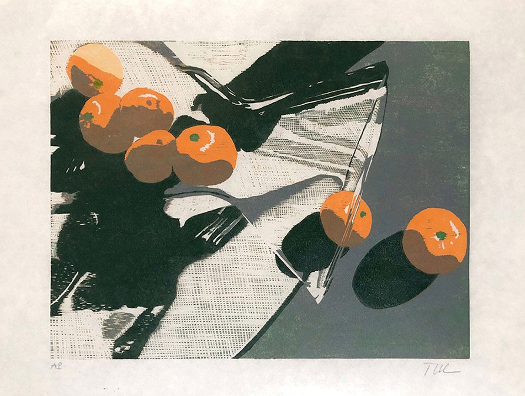
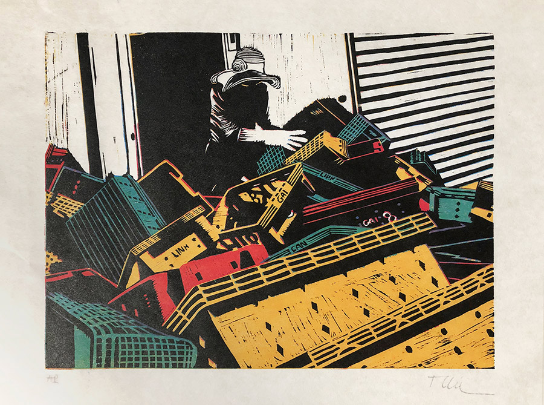
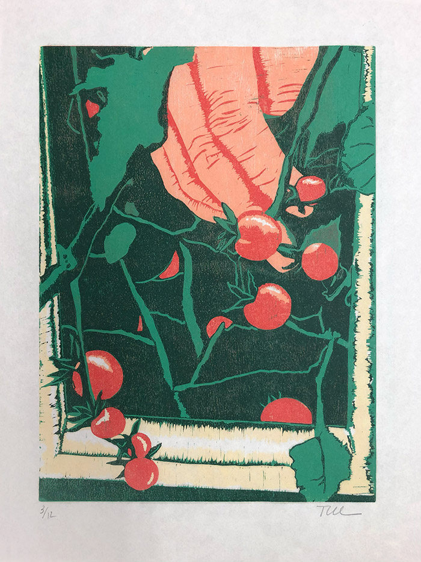
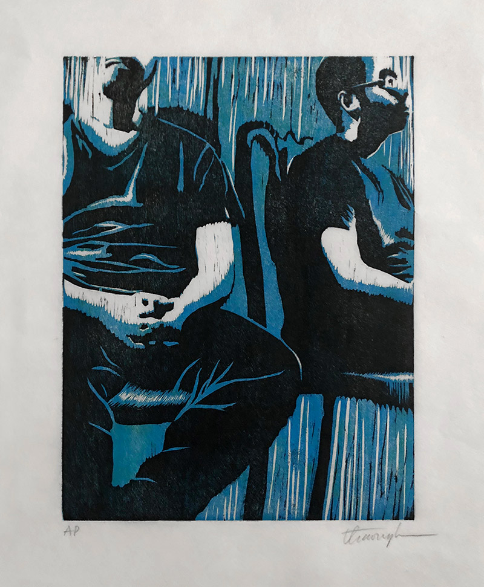

T . U . C
portfolio /
about

Still life
, reduction woodblock print on rice paper, 2021

Working at Hoi An Pier,
multi-woodblock print on rice paper, 2021

Dad's Garden,
multi-woodblock print on rice paper, 2021

Reflection,
multi-woodblock print on rice paper, 2021